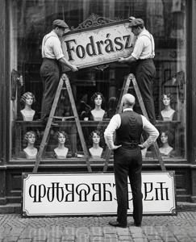
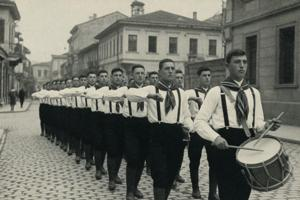
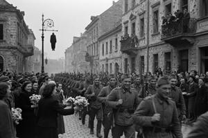

Former Upper Pannonia

Former Upper Pannonia (Zgurian and Deglian: Byla Gorna Pannonia; Pannonian Glagolitic: ⰁⰬⰎⰀ ⰃⰑⰓⰐⰀ ⰒⰀⰐⰐⰑⰐⰊⰀ) is a landlocked territory in Central Europe, bordered by Austria, Hungary, Romania, Serbia, Croatia, and Slovenia. The territory covers approximately 28,400 km²; no reliable census has been conducted since 1985. Independent estimates for 2026 put the resident population at approximately 1,790,000.
The territory has no internationally recognized government. Under the Lausanne Agreements of 1995, it is designated a transitional territory under UN oversight pending a negotiated political settlement between its two major ethnic communities. It is effectively divided between two unrecognized de facto states — the Zgurian Republic in the north-west and the Deglian Republic in the south-east — and a UN-administered Neutral Zone concentrated in the capital, Vronovica. The United Nations Observer Mission for Former Upper Pannonia (UNOMFUP) is the sole internationally recognized administrative authority. Negotiations between the two de facto states have been in permanent deadlock since 1995.
The name Former Upper Pannonia (FUP) entered UN usage after the Lausanne Agreements, which recognized that the Republic of Upper Pannonia had ceased to exist as a subject of international law.
Geography
Former Upper Pannonia occupies the transitional zone between the Pannonian Plain and the northern Dinaric mountain ranges. The terrain descends from limestone karst uplands in the south to the South Drava river valley in the center, and rises into lower hill country toward the northern and north-western borders.
South Drava

The South Drava (Juzsna Drava) is the territory's principal river. Rising in the western part of the Nexozsi Vrjexi range in the woodlands of Dobrogosczi Dubri, it flows east-north-east through the central valley before crossing into Hungary and joining the main Drava. Although navigable, it was never developed for commercial navigation; Habsburg rail connections pre-empted waterway investment.
The Communist government built the Gowbka hydroelectric plant approximately 40 km downstream of Vronovica in the 1950s, the territory's principal source of electrical power. The dam created a large reservoir — originally designated the Stalin Sea, renamed the Pannonian Sea (Pannonsko Morje) after de-Stalinization, and known colloquially as the Stinky Sea (Smrudno Morje). It inundated dozens of riverside settlements, including the former episcopal seat at Bregovo. Decades of industrial discharge from Gowbkaslava's factories left it among the most polluted large water bodies in the world by the 1970s, turning its shores into Xljubiscza, a permanently poisoned marsh.
After 1991, the collapse of cross-boundary rail services revived the river's practical importance; it now serves primarily as a route for contraband trade between the zones, with boat traffic bypassing Neutral Zone checkpoints.
Settlements at South Drava

Vronovica (pop. ca. 670,000), the capital, accounts for approximately forty percent of the territory's total resident population. Founded as an Ottoman fortress in the sixteenth century and developed into a significant city under Habsburg administration, it remains the territory's administrative, cultural, and commercial center. The South Drava bisects it, defining the boundary between the Zgurian and Deglian zones.
Gowbkaslava (pop. ca. 120,000), situated at the right bank approximately 40 km east of Vronovica in the Deglian zone, was the primary site of Communist industrial expansion. At the core of the complex was a heavy metallurgical and military production plant, supplied by iron ore from Krolevy Zseljezni and powered by the Gowbka plant; successive investment added heavy engineering facilities, construction materials plants, chemical factories, and the Gowbkaslava Automobile Plant, which produced the Drava microcar. After the withdrawal of state subsidies in 1990, most of the complex ceased to function.
Bregovo, across the river from Gowbkaslava, the oldest episcopal seat in Upper Pannonia, was pillaged and burned by Ottoman forces in 1529. After construction of the Gowbka dam, the former town drowned completely; only the ruins of the bishop's castle remain, surrounded by water and almost inaccessible. The Zgurian state has offered it for sale at €1 since 1998, on condition of repair, without finding a buyer.
County administrative centers Visztica and Komarovica are located upstream of Vronovica, and Rudec downstream of Gowbkaslava near the Romanian border.
Nexozsi Vrjexi

The Nexozsi Vrjexi (“Impassable Mountains”, or “No-Go Mountains”) is the northernmost chain of the Dinaric Alps, forming the natural southern frontier with Croatia and Serbia. The range reaches its highest point at Vjedjmina Gora (“Witch Peak”, 1,847 m). Passes at lower elevations are navigable year-round; those above 1,000 metres are typically blocked by snow from November through March. The single rail crossing, the Zorzsin Tunnel, has been out of service since 1991. The Klykov monastery, which preserved the Pannonian Glagolitic tradition through the medieval and early modern periods, occupies a chain of pillar rocks on the northern slopes above the South Drava valley.
The mountains are heavily forested and sparsely inhabited. Most of the region is currently administered by the Deglian Republic except the western karst area of Dobrogosczi Dubri which in uninhabited and administered by no one. Iron ore deposits are present at the foothills near Krolevy Zseljezni. Other important settlements:
Drozsin, a county administrative center on the approach from Vronovica to the Nexozsi Vrjexi passes. Site of the infamous 16th century “Werewolf Widow” Baroness Orsoja Drozsinj castle.
Mjedno, an immense detention complex partly located underground in the Bronze Age copper mines.
Northern uplands

North and north-west of the central valley, the terrain rises into rolling hills of 400–700 metres, crossed by the headwaters of several minor Dravan and South Dravan tributaries. The terrain is sedimentary, with coal and oil deposits that were extensively exploited in the twentieth century and are now mostly exhausted.
This region is densely populated. Its settlements include Novokopy and Szamenik, the principal coal-mining towns; Czelenica and Balnosz, the oil and natural gas production towns; the ghost town Starokopy, where nineteenth-century mines were exhausted and abandoned; and the hot-spring resort of Gnilovody near the Austrian and Hungarian borders. All lie in Zgurian territory.
History
What follows is an attempt at a neutral account of the country's history, one that neither Deglians nor Zgurians would accept. The Zgurian and Deglian perspectives are presented in separate articles.
Early and medieval period
The territory's recorded history begins with Illyrian and Celtic tribal populations attested by Greek and Roman sources from the fifth century BCE onward. Roman forces incorporated the region into the province of Pannonia in the first century CE; its subsequent administrative division produced the designation Pannonia Superior — Upper Pannonia — which has given the territory its name ever since. Roman settlement concentrated along the South Drava corridor, leaving road networks, urban foundations, and place-names that persisted long after Roman withdrawal. From the fourth century onward, successive waves of migrating peoples — the Goths, the Huns, the Avars — dissolved the Roman administrative order. The region passed through several ethnic and political configurations before the Slavic southward expansion from the sixth century established the cultural and linguistic character the territory has retained.
Integration into Great Moravia in the ninth century brought Christianity through the mission of Cyril and Methodius, who devised the Glagolitic script and translated the scriptures. The defining migration followed Great Moravia's collapse: the Hungarian invasion of the early tenth century pushed part of the Moravian Slavic nobility and clergy southward into the Pannonian river valleys. For the following six centuries they occupied a zone of shifting suzerainty, organized in small principalities between Hungary and various Balkan powers.
The Glagolitic tradition, carried southward by the emigrating population, survived chiefly at Klykov monastery. When St. Tibor of Bregovo established the episcopal seat in 1040 and imposed the Latin rite, Glagolitic worship was formally prohibited from all churches under episcopal supervision. Klykov maintained its practice by claiming a ninth-century papal exemption — later proved an eleventh-century forgery. In 1115 the Hungarian crown granted the bishops of Bregovo the title of Prince Bishop, extending their authority from the ecclesiastical to the secular; local lords who resisted this dual power tended to align with Klykov, and through their protection the Slavic rite survived. The conflict persisted for the better part of nine centuries. See Catholic Church in Upper Pannonia.
Ottoman era (1529–1691)
The Ottoman advance of 1529 pillaged and burned Bregovo, terminating the medieval episcopal structure. The Ottoman commander Haqim Abaz Bey Kuzgun — a Caucasian frontier officer whose record is heavily overlaid with legend, reputed among his subordinates to shapeshift into a raven — identified a strategically favorable site on the northern bank of the South Drava and established a permanent fortress there. Construction of Kuzgun Qalesi, the future Vronovica, began around 1534.
For approximately 160 years, Upper Pannonia was administered as Kuzgun Sancak. The administration's religious policy was pragmatic; both Catholic rites were tolerated within limits, and the Glagolitic scribal tradition continued without interruption. The period's most durable physical legacy was the stone bridge over the South Drava — the Turski most — which has outlasted every subsequent regime and remains standing.
Habsburg era (1691–1918)
Austrian forces recaptured Upper Pannonia in 1691 during the Great Turkish War and incorporated it into the Habsburg Empire. The northern and western parts were organized as the County of Upper Pannonia; the southern and eastern were attached to the Military Frontier as the Generalate of Upper Pannonia, directly subordinate to military authorities.
The Kuzgun Qalesi fortress was rebuilt according to Vauban principles between 1692 and 1701, acquiring the five-bastion star configuration and the canal that converted it into an artificial island. Renamed Rabenburg, it became the administrative center for both territorial units. The episcopal seat was formally transferred from the ruins of Bregovo to Rabenburg in 1755, coinciding with the consecration of St. Tibor Cathedral.
The same period produced the ethnographic accident that shaped all subsequent Pannonian history. Two Italian military contractors active in Prince Eugene of Savoy's campaigns against the Ottomans — Candido Sguro and Massimo Degliano — each raised companies of Slavic-speaking irregulars and led them in Habsburg service. Settled as Grenzer frontier guards along the Upper Pannonian military frontier, they retained their commanders' surnames as unit designations. Over the following century, the designations became identities: the Slavicized forms zgurci and degljany entered the vocabulary of ethnic self-identification by the early nineteenth century. For a full account, see Zguro-Deglian cultural differences.
The revolution of 1848–1849 surfaced political disagreements: some local activists who identified as Zgurians broadly supported the Hungarian nationalist cause, while some self-identifying Deglians and most of the local nobility backed the Habsburg side. Backing Vienna proved sound pragmatic self-interest. In 1850, the Habsburg administration merged the County and the Generalate into the Banate of Upper Pannonia with limited autonomy; the arrangement persisted under the Austro-Hungarian Compromise of 1867, within the Kingdom of Hungary.
The late Habsburg decades brought industrialization to the South Drava valley, a functioning railway network, and the urban infrastructure of a prosperous provincial capital at Rabenburg/Vronovica. The same period saw the growth of the Pannonian Slavic Revival, which gave the territory's Slavic population its first coherent sense of shared historical identity and a distinct national culture.
First Republic and Kingdom (1918–1940)
{kind=link}

The Pannonian National Committee in Vronovica proclaimed independence within days of the Austro-Hungarian armistice in 1918. The Pannonian Legion, a volunteer formation of Pannonian POWs that had served on the Caucasian front, arrived in Vronovica in February 1919 after an overland march from Trieste and suppressed a Communist insurrection backed by the Hungarian Soviet Republic. The plebiscite of 1920 returned approximately sixty percent in favor of continued independence; Zgurian voters were predominantly for independence, Deglian voters predominantly for union with Yugoslavia. The democratic republic survived the plebiscite and the polarization it revealed, though not for long.
{kind=link}

General Drogan Glovacz seized power in 1931 as leader of the National Empowerment Movement. He was enthroned as King Drogan I in 1934; his consort, the actress Etelka Baumgarten, was enthroned under the name Queen Adele and proclaimed heiress. The monarchy ended in September 1940 when Hungary, in coordination with an internal faction of pro-Hungarian officers, invaded and annexed Upper Pannonia. King Drogan was assassinated on the first day. Queen Adele escaped to London, where she constituted a government in exile; a posthumous daughter, Ljudmila, was born there in 1941.
Occupation and Socialist era (1940–1990)
{kind=link}

Hungarian occupation authorities restored Hungarian as the official language and applied the racial legislation operative in Hungary since 1938. German assumption of effective control in March 1944 transformed exclusion into extermination: the Jewish and Roma communities were collected and deported in the spring and summer of that year; the great majority were murdered.
The Red Army's autumn 1944 offensive liberated Upper Pannonia in heavy fighting. Severyn Gowbka arrived in Vronovica in December 1944 at the head of a Soviet-backed provisional government. The People's Republic of Upper Pannonia was proclaimed in 1945. Over the following four years, Gowbka consolidated a comprehensive party-state, eliminating rival political formations, nationalizing the economy, and establishing the NON secret police in the island fortress.
Having initially aligned with Moscow, Gowbka shifted toward Yugoslavia in 1956, then broke with Yugoslavia in 1966. Thereafter, refusing alignment with either superpower bloc and unwilling to trust any neighbor, he cultivated alliances with Albania, Romania, Gaddafi's Libya, and the People's Republic of China. After denouncing the Soviet invasion of Czechoslovakia in 1968 and suspending Warsaw Pact membership, he embarked on a sweeping militarization of Pannonian society premised on the likelihood of simultaneous conflict with the USSR, Yugoslavia, and NATO. Military service became mandatory for both sexes; training emphasized guerrilla tactics and resistance to occupation.
Domestically, the government transformed Gowbkaslava into an industrial center and built Sockostur as a comprehensive planned district in southern Vronovica. Initial growth was sustained by modest oil deposits developed in the 1950s; by the 1970s these were substantially exhausted. Growing debt, structural inefficiencies of an economy that admitted no private enterprise, and a budget consumed by military expenditure and NON left the economy in sustained contraction. By the late 1980s, real wages had fallen sharply and food shortages were generating open protest for the first time in four decades. In autumn 1989, Gowbka died from a heart attack.
Civil war and partition (1990–1995)
The fall of the Communist regime in 1990 inaugurated the Third Republic. The first competitive elections since before the Glovacz dictatorship were won, in both communities, by ethnically based nationalist formations. The resulting parliament was structurally incapable of governing: every question of post-Communist reform was filtered through ethnic competition, with each measure that benefited one community characterized by the other as ethno-nationalist capture of the state. The dismantling of the planned economy that followed was rapid, poorly regulated, and widely regarded as corrupt. By 1991, registered unemployment exceeded forty percent in Vronovica.
Deglian community organizations, arguing that the transition had concentrated assets and power in Zgurian hands, demanded first autonomy, then separate constitutional status. Zgurian nationalists treated these demands as a prelude to partition. Economic collapse and state weakness produced a sharp rise in crime. In Vronovica, workers from shuttered factories organized into ethnically based self-defense militias.
Under Gowbka's militarization programme, the People's Liberation Army was organized as a network of territorial militias rather than a regular force. This kept it dispersed and difficult for an occupier to neutralize, but also made it natural, when the political order collapsed, for territorial units to reconstitute themselves around their local communities. Underground weapons depots stocked with small arms, ammunition, explosives, and light artillery intended for prolonged national resistance had been established across the territory. When the regime collapsed, they proved impossible to secure or account for; they were still dispersed when the civil war began, and they armed it.
Full-scale war erupted in the spring of 1992. A ceasefire mediated by Queen Ljudmila briefly halted the fighting in 1994. Both warring parties agreed to restore the monarchy, with the queen serving as supreme arbiter. She was assassinated during the enthronement ceremony in Vronovica. The ceasefire collapsed the same day.
UN peacekeepers arrived in 1995. The Lausanne Agreements halted the fighting, fixed the ceasefire lines as administrative boundaries, established the Neutral Zone, and created the office of the UN High Commissioner. They also specified, as preconditions for any permanent constitutional settlement, that the Zgurian and Deglian authorities agree on a joint government and establish accountability mechanisms for wartime atrocities. Neither condition has been met.
Government and politics
The constitutional status of Former Upper Pannonia is officially described as transitional. In practice it is permanent.
The UN High Commissioner's office is housed in the Banov Polac on the Grodski Plac in Vronovica. Seven successive High Commissioners have occupied the post since 1995; each has produced reports characterizing the negotiations as at a sensitive stage. The negotiating process is continuous and has resolved questions of a sufficiently technical character — waste collection schedules, utility billing across zone boundaries, customs procedures at zone crossings — without producing, or approaching, any agreement on the underlying constitutional question.
The Zgurian Republic (Zgurska Republyka) administers the north-western portion of the territory, comprising approximately 55 percent of the former country's area. Its constitutional system provides for an elected president and a unicameral assembly; elections are conducted and are, by Pannonian standards, competitive.
The Deglian Republic (Deglänska Republyka) administers the south-eastern portion of the territory, comprising approximately 45 percent of the area. Since 1999, it has been governed by the Secret Control Committee, an anonymous military junta whose membership is not publicly disclosed, under permanent martial law.
Neither republic is internationally recognized, and neither acknowledges the jurisdiction of the other. Both constitutions designate Vronovica as the capital and formulate other mutually incompatible territorial claims. Neither has proposed a resolution.
The UN peacekeeping force, FUPFOR (Former Upper Pannonia Force), has been deployed since 1995. It maintains order within the Neutral Zone, secures checkpoints, and administers King Svetoplok International Airport north of Vronovica. FUPFOR has no mandate to operate within either de facto zone.
Demography

The 1985 census recorded a population of 2,040,184; this figure is likely an undercount, since it excludes most Roma, who tend to evade census enumeration and are estimated at 7–10 percent of the population. No territory-wide census has been conducted since. Independent estimates for 2026 put the resident population at approximately 1,790,000, a decline of roughly twenty percent attributable to wartime casualties, emigration, and declining birth rates.

The ethnic composition of population registered by 1985 census was: Zgurians, 51 percent; Deglians, 39 percent; and others (Hungarians, Germans, Slovenes, Muslim Slavs, Jews, registered Roma), 10 percent. Current figures are disputed and unreliable; both de facto governments systematically overcount their own populations and undercount the other's. UN estimates place the current Zgurian population at approximately 900,000, the Deglian at 700,000, the Roma at 160,000, and other ethnic minorities at 30,000.
The two principal communities share a language, a Catholic religion, a material culture, and an indistinguishable appearance. Religious identification substantially exceeds active practice and functions primarily as cultural inheritance; shared Catholic identity has not served as a basis for reconciliation.
Emigration has been the most consistent demographic force since 1990. The emigrant population — concentrated in Germany, Austria, and Slovenia — is estimated at between 400,000 and 550,000; remittances constitute a significant share of household income across both zones. The cohort born during 1992–1995 is markedly underrepresented in the current resident population: wartime conditions reduced birth rates sharply, and a disproportionate share have since emigrated. Emigration has cut the share of ethnic minorities other than Roma to about a fifth of its 1985 level, as Hungarians, Germans, Slovenes, and Jews have overwhelmingly repatriated to their historical homelands.
Economy
The economy of Former Upper Pannonia functions poorly and does not grow.
The absence of internationally recognized statehood is the primary structural constraint. Without recognized governments, neither de facto state can enter binding trade agreements, access international credit markets, attract foreign direct investment through normal channels, or participate in EU regulatory frameworks. Any enterprise operating in either zone faces a legal environment that outside investors treat as equivalent to a jurisdiction without a state.
Remittances from the emigrant diaspora are the most reliable household income source. Subsistence and small-scale commercial agriculture sustain the rural population. An extensive informal economy — developed in the Communist period and greatly expanded since — encompasses smuggling, currency exchange, and cross-zone contraband. Humanitarian aid and EU stabilization funds, channeled through UNOMFUP, supplement public services and household income. Remote employment has grown steadily since the mid-2000s, particularly among the educated in the Neutral Zone and Zgurian Republic; cryptocurrencies serve as the primary payment instrument.
The Neutral Zone functions as the territory's only point of contact with the legitimate international economy. Foreign NGOs, UN agencies, and international organizations are based here; the commercial district along Enjo Zslutovodyj avenue serves both international personnel and Pannonian residents.
Entry requires a visa issued by UNOMFUP on diplomatic or humanitarian grounds; ordinary tourism is not a recognized category. Letters of invitation from a registered humanitarian organization establish eligibility; such letters are available for purchase through well-known informal channels. The waiting period runs to several months regardless of the stated grounds. Land crossings into either zone are unrestricted only for local residents; everyone else must obtain a border visa, and issuance is far from automatic. Unofficial entry across the land borders is possible; the consequences are not predictable. For more detailed visitor guides, see the relevant articles.
Categories: Countries, General reference